Prediction of NBA MVP's using Statistical Analysis.
Table of Contents
1 Problem Statement:
1.1 Introduction:
The National Basketball Association Most Valuable Player Award is an annual National Basketball Association award given since the 1955-56 season to the best performing player of the regular season.
1.2 Problem:
From the data of 32 years, we are trying to predict the MVP for the last 5 years.
Every year, there is always huge debate about who is gonna win the MVP award for that particular season. It is fairly easy to determine the short-list of candiates; however, we wanted to investigate, via various ML models, how well can we model MVP voting.
2 Motivation:
The hypothesis that motivated the problem statement was the following: Though the performance statistics of players have some influence on the selection of MVP, but the winner of NBA's MVP actually boils down to "narrative". Narrative is naturally hard to define concept, but by that we mean the kinds of qualitative, hard to model factors that often influence voters. For ex: Clutchness: To be clutch is to play great when it matters most, to take big shots that mean the most.
So, the worse our model is, the stronger this hypothesis appears because we are only using quantitative measures.
3 Data collection:
3.1 Resources:
Mostly, we found the related data from Basketball-reference. It had the data regarding MVP winners and the top players in the race of MVP award for a season. This had the data from 1956-2017. We also found kaggle Dataset, but it didn't have a crucial label parameter, so we were unable to use that dataset.
3.2 Processing:
We did scraping on this website, we basically collected data from each season, converted it into csv format and then merged data of all seasons. Data from the website was in the text format. The data from the website didn't have information regarding the voting year. So, we manually entered the details of the year in the data.
At the end, our data had these columns.
| Description | Column Name |
|---|---|
| Year | Year |
| Player | Player |
| Age | Age |
| Team | Tm |
| MVP vote Share | Share |
| Games | G |
| Minutes per game | MP |
| Points | PTS |
| Total Rebounds | TRB |
| Assists per game | AST |
| Steals per game | STL |
| Blocks per game | BLK |
| Field Goal Percentage | FG% |
| 3-pointer Perncentage | 3P% |
| Free throw Percentage | FT% |
| Win shares | WS |
4 Approach:
4.0.1 How MVP is calculated in general?
Until the 1979-80 season, the MVP was selected by a vote of NBA players. Since, the 1980-81 season, the award is decided by a panel of sportswriters and broadcasters throughout the United States and Canada.
Note: A panel member can vote to more than one player.
4.0.2 How we calculated who's the MVP?
- Problem: The number of people who are in the panel
voting have been increased through years. So, this resulted in rise in the number of votes per player through the years. So, we can't directly take the number of votes per player as parameter that the model needs to learn, as the number of votes per player throughout the years is biased.
- Solution:\begin{equation} Voteshare = \frac{Number \\ of \\votes\\ for\\ a \\player}{Total\\ number\space of\\ votes\\ that\\ year} \end{equation}
We used above formula to get vote share column, which normalizes the number of votes per season.
The person with highest vote share in a season wins the MVP of the season.
With these inputs and output parameter, we created four models:
- Support Vector Regressor (SVR)
- Ada Boost Regressor
- Decision Tree Regressor
- Linear Regression
We train the models to predict the voteshare of a player given his statistics.
5 Analysis of Dataset:
- The Dataset we collected including test and train had 750 rows.
- We only collected data from 1975-2017, we didn't include data from 1950-1974 because STL, BLK data has been included from 1975 and it proved to be an important factor in deciding the outcome of the games and also the voteshare when we calculated correlation graph.
- We excluded a column called WS/48 because it can be linearly predicted by MPG, G, and WS.
- There were some players with null values for some columns. We decided on replacing those null values with zero. Because, if we had taken average for filling the null values, column would loose its significance.
- We also calculated Minutes column from the MP and G columns, with the intuition that a MVP player would have played more minutes, as the award generally goes to the player who had been in playoffs, which automatically increases the minutes he played over other players (i.e, those players who didn't play in playoffs).
- We are also taking the Assists(AST), Steals(STL), Blocks(BLK) per game, because it normalizes the corresponding columns.
6 Visualization
6.1 Correlation
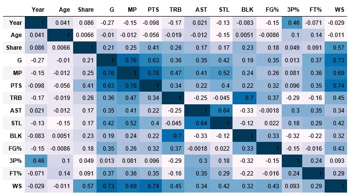
Figure 1: Correlation between columns in train data.
In the Figure 1, we can see that Voteshare(share) isn't highly correlated to a particular column, but depends well on multiple columns.
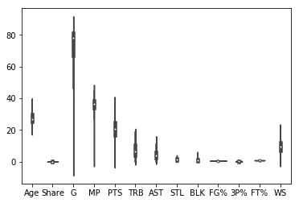
Figure 2: Violin Plot of data.
Figure 2 gives the violin plot of data excluding the Year column.
7 Feature Engineering
- In the data, the columns we decided/generated to keep, were explained in Data Analysis section.
- From correlation matrix [1], we observe that Voteshare doesn't depend on single column but on multiple columns. We also observe that Voteshare majorly depends on PTS, WS columns. We also did normalization on every feature seperately according to the season itself (like normalizing STL in 2010 season), but it didn't give any significant results.
- After taking correlation values into account and after doing a lot of
experiments, we decided to take the following columns in feature vector.
Table 2: Final columns for feature vector. MP PTS STL FG% FT% WS G TRB 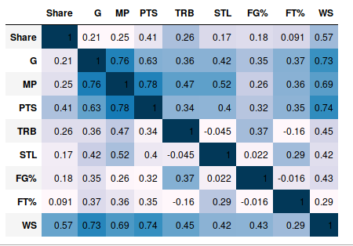
Figure 3: Correlation Matrix of Final Features taken.
Refer to Figure3 [3] for correlation between final features and share.
8 Model Building
We used the following regression models.
8.1 AdaBoost Regressor:
8.1.1 Parameters:
max_depth = 4
number_of_estimators=500
random_state = np.random.RandomState(1)
8.2 DecisionTree Regressor:
8.2.1 Parameters:
max_depth = 10
random_state = np.random.RandomState(1)
splitter = random
8.3 Linear Regression:
We used standard parmeters to build our model.
9 Training, Validation and Test Metrics.
We used Root Mean Squared Error(RMSE) for calculating error.
- Metrics for 2012-2013 Season:
Validation error Test error AdaBoost Regressor 0.2246 0.2166 Decision Tree Regressor 0.1950 0.1300 Linear Regression 0.1880 0.1600 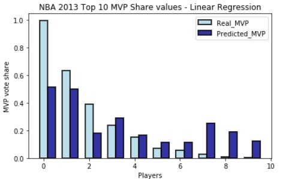
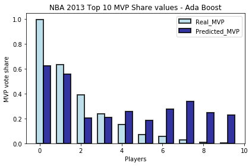
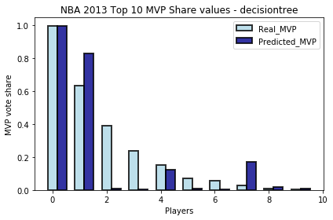
- Metrics for 2013-2014 Season:
Validation error Test error AdaBoost Regressor 0.2246 0.2558 Decision Tree Regressor 0.1950 0.2700 Linear Regression 0.1880 0.2028 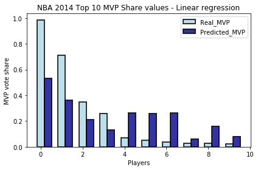
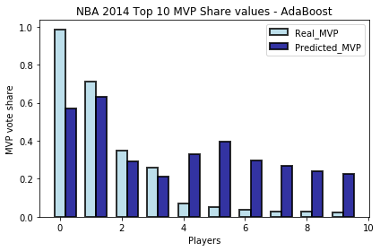
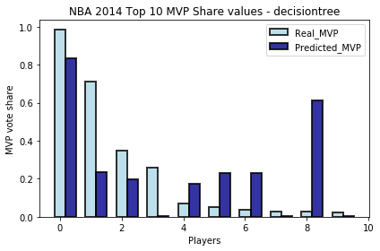
- Metrics for 2014-2015 Season:
Validation error Test error AdaBoost Regressor 0.2246 0.2060 Decision Tree Regressor 0.1950 0.2140 Linear Regression 0.1880 0.2270
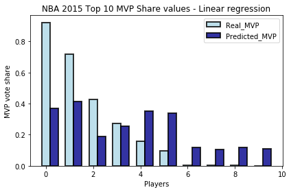
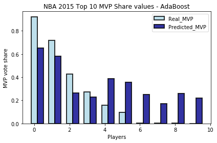
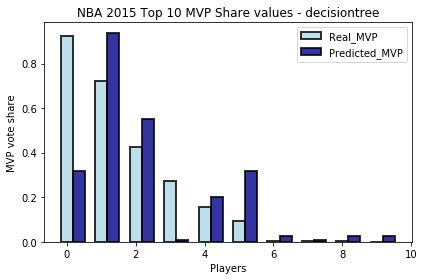
- Metrics for 2015-2016 Season:
Validation error Test error AdaBoost Regressor 0.2246 0.247 Decision Tree Regressor 0.1950 0.237 Linear Regression 0.188 0.233 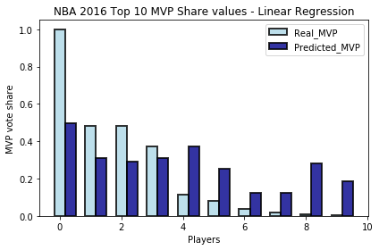
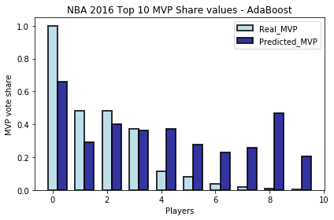
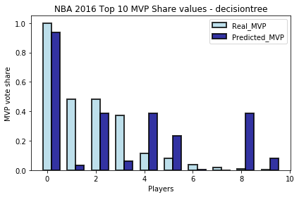
- Metrics for 2016-2017 Season:
Validation error Test error AdaBoost Regressor 0.2246 0.2426 Decision Tree Regressor 0.1950 0.3320 Linear Regression 0.188 0.2613 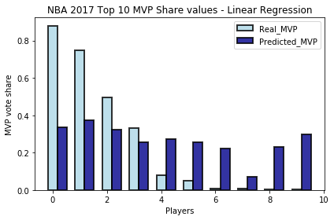
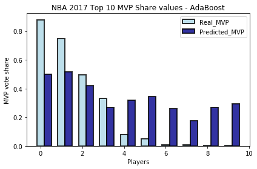
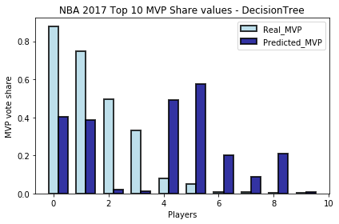
10 Sources And References.
11 Conclusion
- After doing experiments with different models, these 3 models results described above were better.
- Among those AdaBoost Regressor seemed to work better, followed by Linear Regression, followed by DecisionTree Regressor.
- We can also see validation error for AdaBoost is quite nearer to the error from test data.
- AdaBoost was able to predict MVP 4 times correctly in the past 5 seasons.
11.1 Where our model have fallen short?
- There is a considerable difference between today's stats and 80's stats.
- Voters can see past beyond stats.
- Voters take things into consideration that are not easily quantifiable like cluctchness etc.
- Since MVP votes are given only for 10-15 people for each season,
the dataset is considerably small.